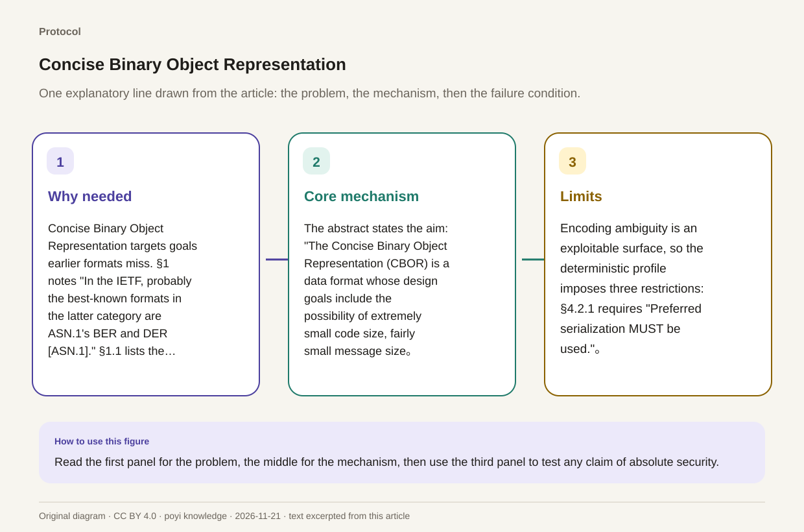
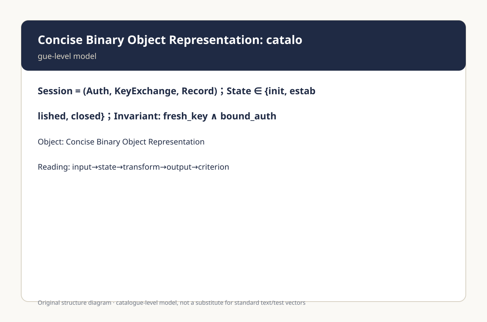

Principles
Protocol: Concise Binary Object Representation (CBOR 二进制编码). The abstract states the aim: "The Concise Binary Object Representation (CBOR) is a data format whose design goals include the possibility of extremely small code size, fairly small message size, and extensibility without the need for version negotiation." §1 sets the model — "The underlying data model is an extended version of the JSON data model [RFC8259]." §3.1 enumerates the major types, e.g. "Major type 0: An unsigned integer in the range 0..2^(64)-1 inclusive.", "Major type 2: A byte string." and "Major type 5: A map of pairs of data items." §3.2.1 characterises the terminator: "It is not itself a data item: it is just a syntactic feature to close an indefinite-length item." §3.4 gives the extension mechanism: "In CBOR, a data item can be enclosed by a tag to give it some additional semantics".

Why it matters
It targets goals earlier formats miss. §1 notes "In the IETF, probably the best-known formats in the latter category are ASN.1's BER and DER [ASN.1]." §1.1 lists the objectives in decreasing importance: "The representation must be able to unambiguously encode most common data formats used in Internet standards.", "The code for an encoder or decoder must be able to be compact in order to support systems with very limited memory, processor power, and instruction sets.", "Data must be able to be decoded without a schema description." and "The format must be extensible, and the extended data must be decodable by earlier decoders."
Applications
One value admits several legal encodings, and §4.1 sets the trade-off: "it is desirable that an encoder always chooses a preferred serialization (preferred encoding); however, the present specification does not put the burden of enforcing this preference on either the encoder or decoder." Extension is managed by registry — §9.2 records "IANA has created the “Concise Binary Object Representation (CBOR) Tags” registry". The abstract also settles versioning: "It does not create a new version of the format." — it stays fully compatible with the RFC 7049 interchange format, so deployed CBOR needs no version negotiation.

Limits & attacks
Encoding ambiguity is an exploitable surface, so the deterministic profile imposes three restrictions: §4.2.1 requires "Preferred serialization MUST be used.", "Indefinite-length items MUST NOT appear." and "The keys in every map MUST be sorted in the bytewise lexicographic order of their deterministic encodings." §5.3 puts malformed-but-valid items on the layer that understands them: "A well-formed but invalid CBOR data item (Section 1.2) presents a problem with interpreting the data encoded in it in the CBOR data model." §10 lands the risk in the parser: "Complex parsers are well known as a likely source of such vulnerabilities, such as the ability to remotely crash a node, or even remotely execute arbitrary code on it." and demands hostility by default — "A CBOR decoder needs to assume that all input may be hostile even if it has been checked by a firewall, has come over a secure channel such as TLS".
History
RFC 8949 is signed by C. Bormann (Universität Bremen TZI) and P. Hoffman (ICANN), published December 2020 with “STD: 94” and “Obsoletes: 7049” in the header. The abstract characterises the replacement: "This document obsoletes RFC 7049, providing editorial improvements, new details, and errata fixes while keeping full compatibility with the interchange format of RFC 7049."
Worked example & verification
Formal model and reproduction steps
[\mathrm{Adv}^{\Pi}_A(\lambda)\le n\cdot\mathrm{Adv}^{\mathrm{prf}}F(\lambda)+\varepsilon{\mathrm{aead}}(\lambda)]
Concise Binary Object Representation: the registered public parameters, key material or randomness, and message are mapped through the stated transformation to an output checked against the registered criterion. The worked example is a structural reproduction, not a new test vector; parameter ranges, standard versions and implementation details remain source-bound.
References
- Wikipedia search entry for CBOR 二进制编码. https://zh.wikipedia.org/w/index.php?search=CBOR%20%E4%BA%8C%E8%BF%9B%E5%88%B6%E7%BC%96%E7%A0%81
- Handbook of Applied Cryptography (Menezes, van Oorschot, Vanstone). https://www.cacr.math.uwaterloo.ca/hac/
- RFC 8949: Concise Binary Object Representation. https://www.rfc-editor.org/rfc/rfc8949
- Published standard/RFC for CBOR 二进制编码. https://www.rfc-editor.org/rfc/rfc8949